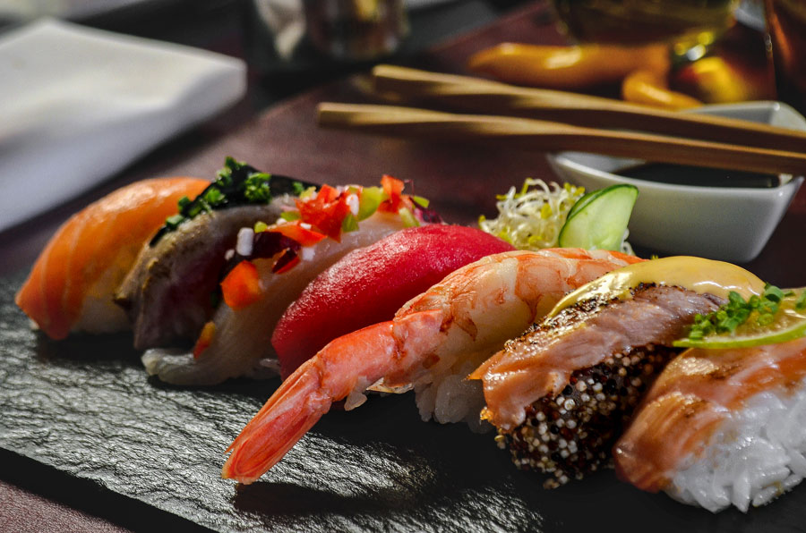
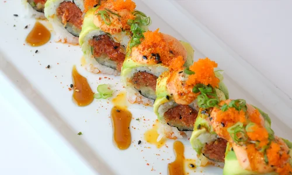
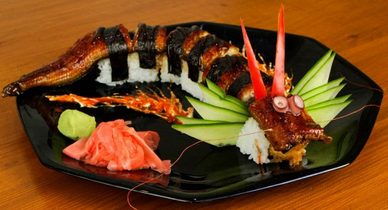
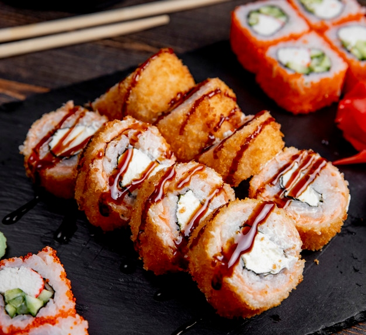
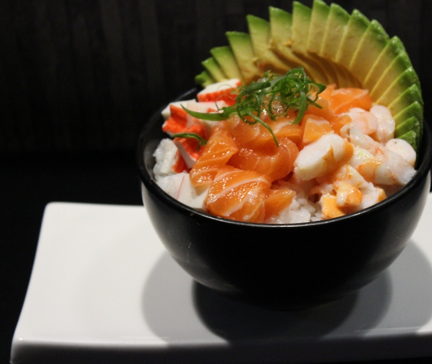
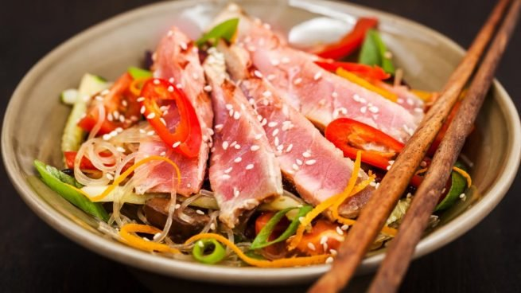
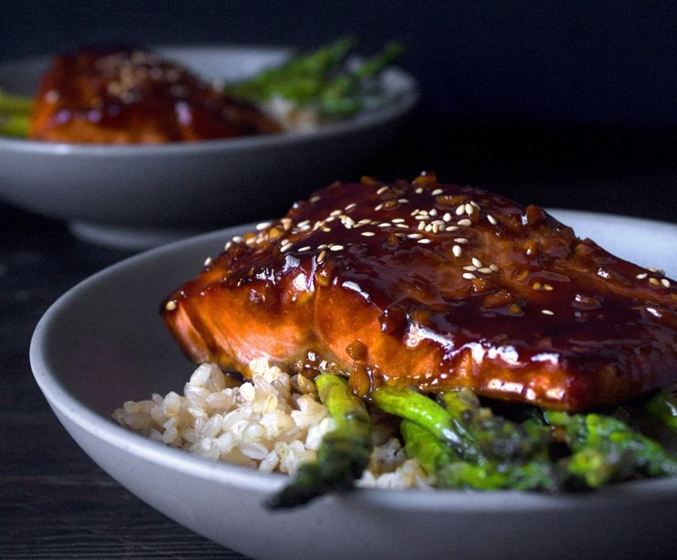

ENTRADAS
Langostinos crujientes (Langostinos rebozados en cereales). Spring roll de cerdo (Acompañados de salsa agridulce). Sprin roll veggie (Acompañados de salsa teriyaki). Sprin roll de salmón (acompañados de salsa acevichada). Ceviche (Pescado blanco, Atún Rojo o Salmón). Tiradito (Salmón o Pulpo).

SUSHI CLÁSICO
New York roll (Salmón y palta). SPF roll (Salmón, queso y palta). Philadelphia roll (Salmón y queso). Buenos Aires roll (Salmón, queso, palta y langostinos). Feel roll (Tamago, salmón, queso y palta). Sashimi, Niguiri y Geisha (De salmón, salmón ahumado y pulpo).

SUSHI FUSIÓN
Honey roll (Salmón cocido con miel y jengibre). Smoke roll (Salmón ahumado, queso y palta, envuelto en sésamo). Ebi roll (Langostinos en tempura, queso y crocante de batata). Soul Roll (Tamago relleno de palmito y salmón, envuelto en queso).

Placer real (Tamago relleno de palmito, queso y palta, envuelto en salmón).Nazgul roll (Queso, mango y langostinos grillados). Gandalf roll (Langostinos rebozados en cereal y mango, envuelto en palta). Mordor Roll (Salsa rocoto, pollo crispy y palta). Saruman roll (Queso saborizado, pollo teriyaki y manzana).

SUSHI CALIENTE
Dragon Roll (Rocoto, langostino rebozado en cereal y queso). Tiger Roll (Salmón y pescado blanco marinados en leche de tigre). Fenrir Roll (Salmón ahumado y ananá). Valhalla Roll (Pollo crispy y queso cheddar). Snake Roll (Salmón ahumado, palta y queso).

GOHAN
Clásico (Arroz, sésamo, salmón, queso, palta y langostinos crispy). Pollo (Arroz, sésamo, pollo crispy, queso, salmón y palta). Krab (Arroz, sésamo, salmón, queso, kanikama, palta y langostino crispy). Veggie (Arroz, sésamo, tamago, queso, palta y verduras salteadas).

WOK
Chow Fan (Arroz y vegetales salteados, proteina a elección, aceite de maní y salsa de soja). Chow Mein (Fideos de arroz y vegetales salteados, proteina a elección, aceite de maní y salsa de soja). Chop Suey (Vegetales salteados, proteina a elección, aceite de maní y salsa de soja).

PLATOS PRINCIPALES
Salmón Teriyaki (Salmón grillado en salsa teriyaki, arroz yamaní y verduras salteadas). Lomo Saltado (Lomo en cubos, verduras salteadas en salsa de soja y crocante de batata). Bondiola Teriyaki (Braseada con salsa teriyaki, hongos y pure de batata cremoso).
/////////////////////////////////////////////////////////////////////////////